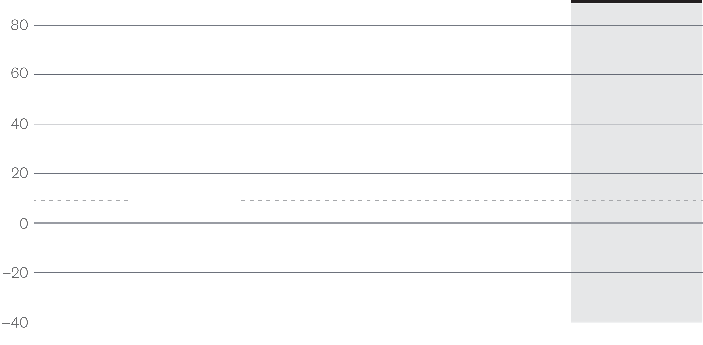
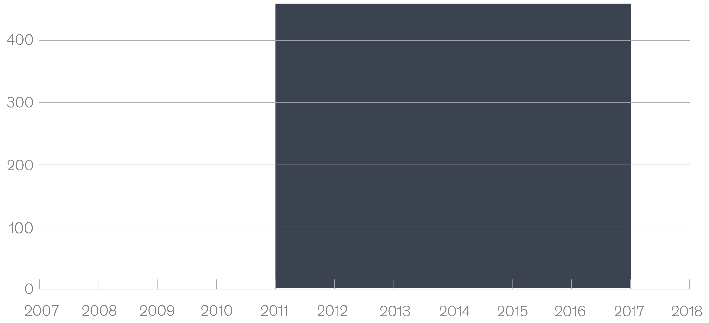
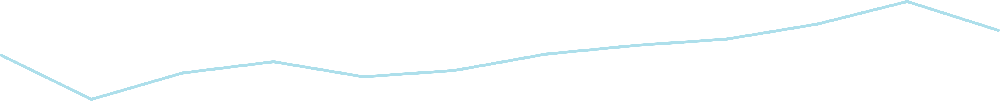
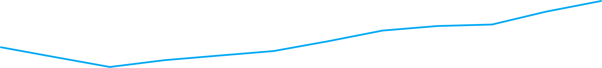

Beating the cycle
Economic downturns take their toll—and chemical companies are no exception. Our research
finds companies that increased resilience in the last downturn made bold moves.
Building resilience in chemicals
What are resilients?
We analyzed the paths of the 264 largest publicly listed chemical companies worldwide and found that during the last downturn, about 20 percent of those companies performed materially better than the rest.
Download the full article
Total shareholder return for 264 largest publicly listed chemical companies, 2007–11, %

Average: 9%
Nonresilients (211 companies)
Resilients
(53 companies)
Not only did resilients perform better in the downturn (2007–09) and during recovery (2009–11), but they were also able to maintain this advantage and outperform their peers in the growth phase (2011–17).
Total shareholder return, indexed to 100 (FY 2007)


Growth
Resilients
Nonresilients
S&P 500
Resilient companies distinguish themselves by taking five decisive actions
Preparing the balance sheet ahead of time
Staying focused on economic profit—even in a downturn
Cutting costs quickly and keeping them under control
Divesting in the downturn, then acquiring at lower rates early in the recovery
Restructuring proactively and decisively
Download the full article
Maintaining the advantage
Want to learn more about how to beat the cycle?
Copyright © 2019 McKinsey & Company. All rights reserved.
Source: Capital IQ, CPAnalytics, McKinsey analysis
Resilient companies reduced leverage before and during the downturn and used the increased headroom for investments during the recovery.
Despite the economic downturn, resilients increased their share of profits by approximately
two percentage points faster than their peers.
Resilients were prepared earlier and made moves faster to reduce costs during the downturn, and they were also able to keep them low entering the recovery.
Resilients increased their acquisition activity during the recovery when prices were cheaper than at the peak.
Resilients made quicker and more impactful restructuring decisions during the downturn, helping them adjust to the new economic landscape.
